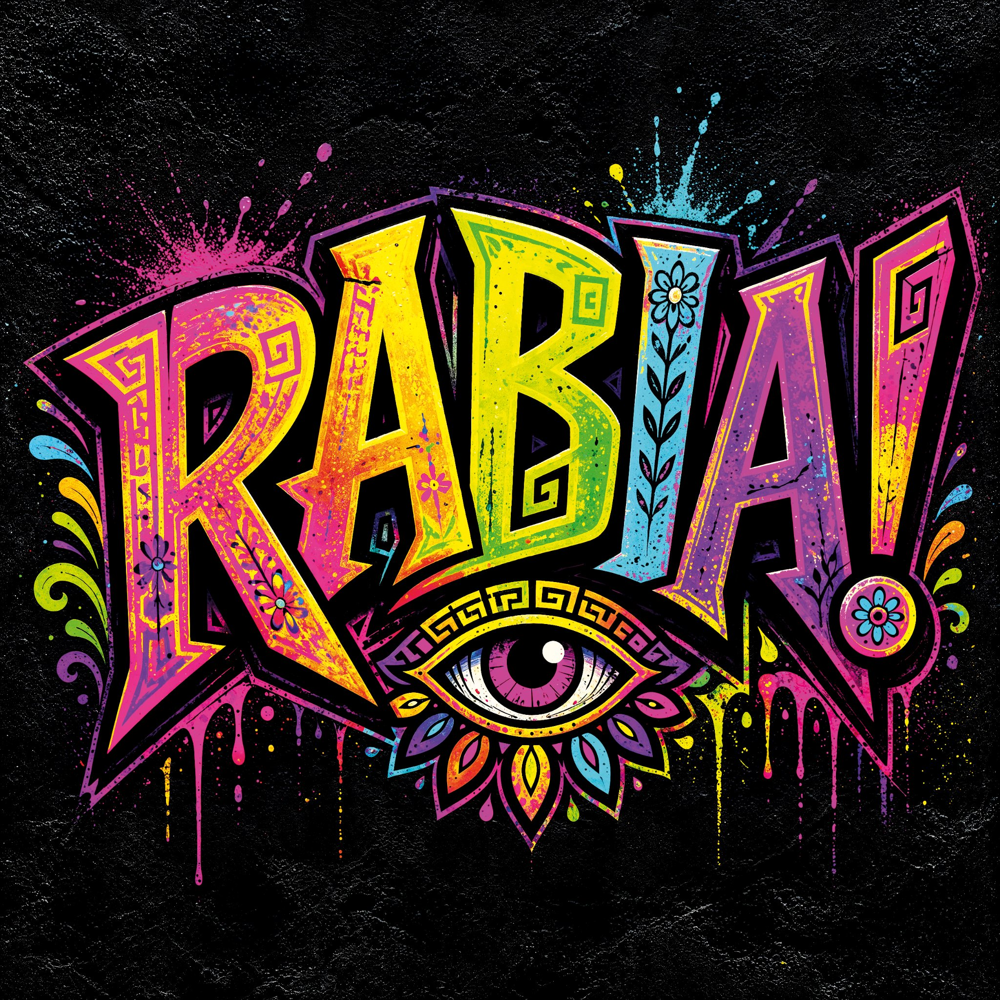
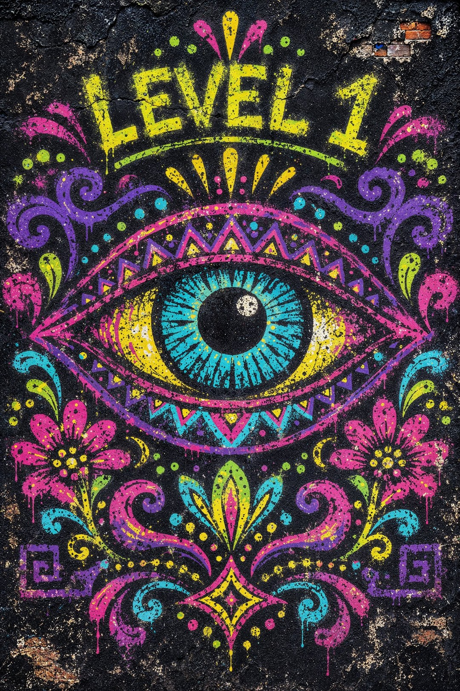
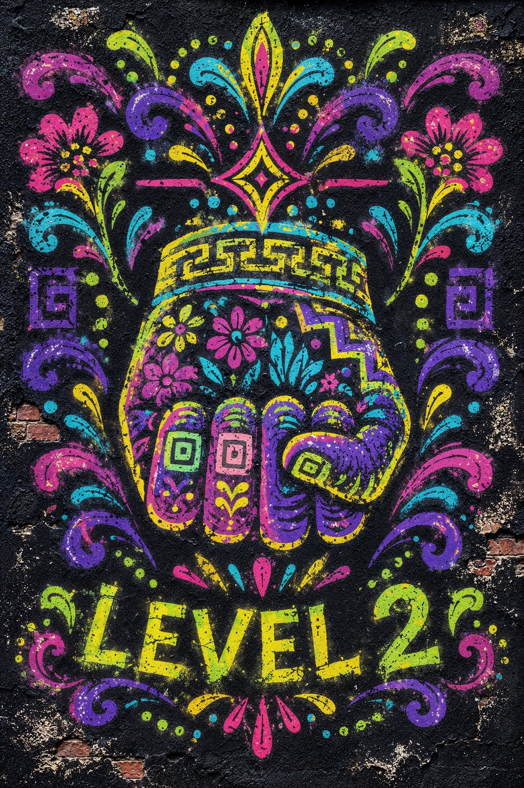
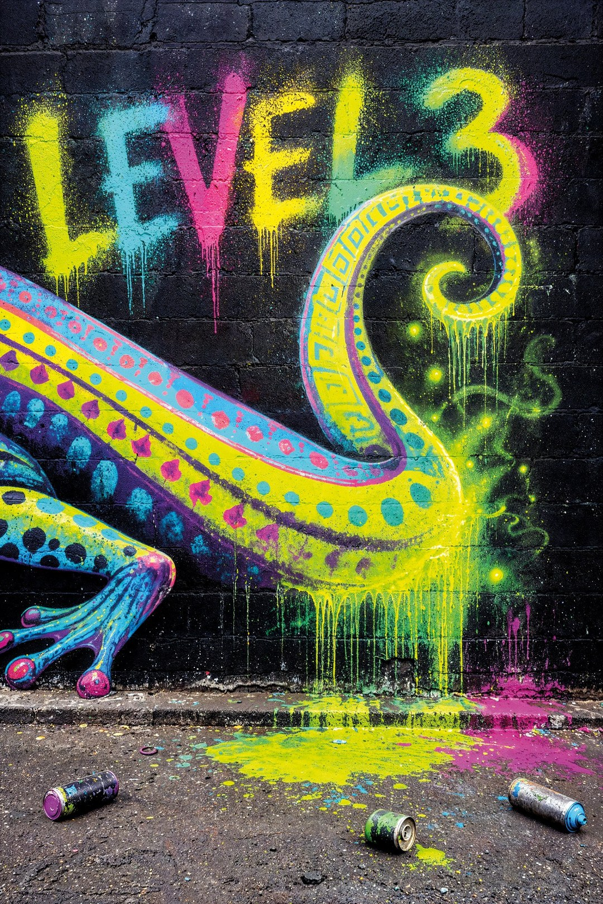
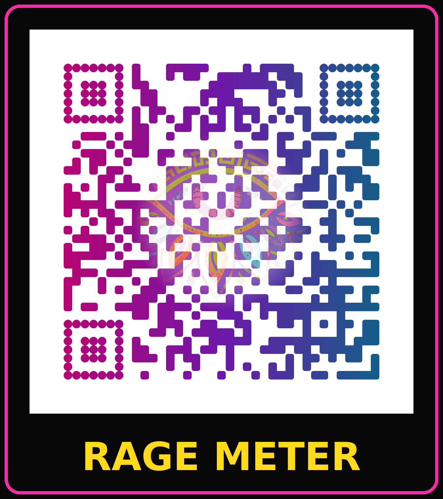
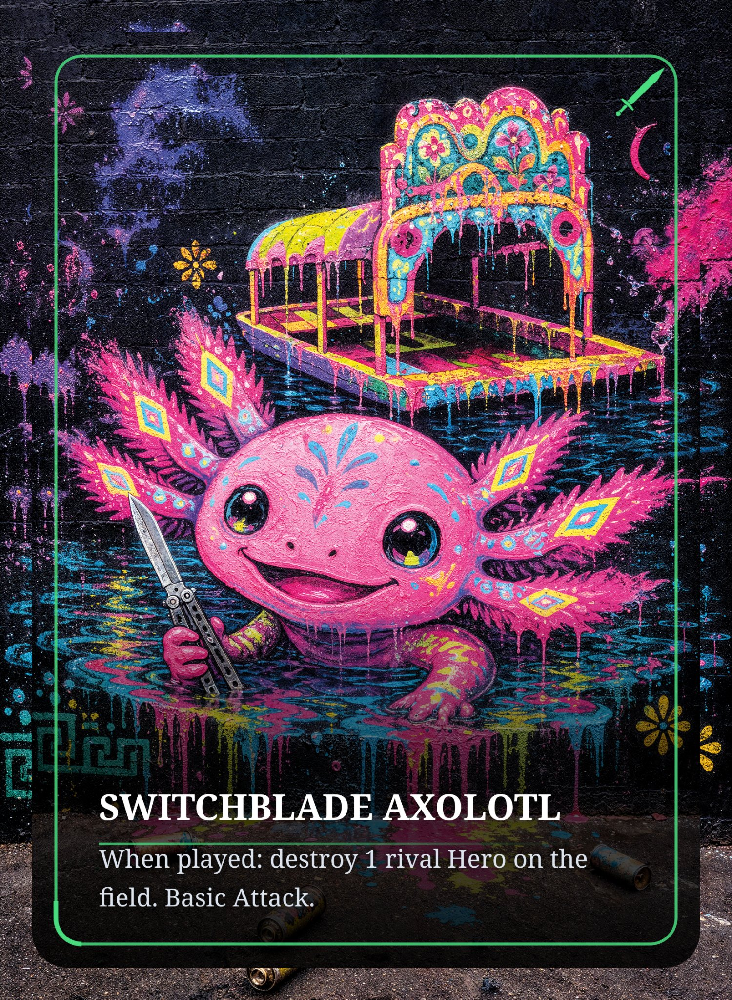
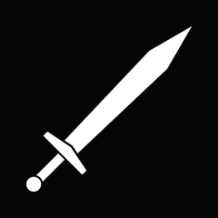
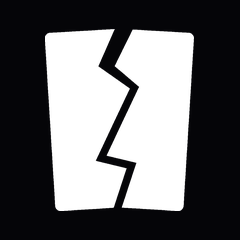
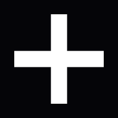
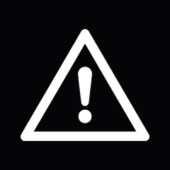

1
Robo
Roba 1 carta. Si es normal, va a tu mano. Si es Trampa, revélala y actívala de inmediato. Puedes usar Fuga en la Rutera para cancelarla.

El juego de cartas fronterizo: héroes de barrio, amenazas de leyenda y mucha, mucha rabia. Aquí se viene a repartir trancazos, a perder con dignidad (o sin ella) y a cobrar venganza con una sonrisota. Baja héroes, aguanta vara y sé el primero en dominar la mesa.
Sé el primero en tener 3 Héroes vivos en tu mesa. Si lo logras en cualquier momento, ganas inmediatamente.
Cinco minutos de acomodo y a repartir trancazos. Peléense por el lugar con respaldo si quieren, pero por las reglas no: esto es todo lo que necesitas antes de la primera mano.
Cada jugador recibe una carta de Medidor de Rabia de doble cara y la coloca en posición de Nivel 0. La posición de la carta es el nivel:
Nivel 0 — coloca la carta en horizontal.
Nivel 1 o 2 — gira la carta para que el nivel actual apunte hacia los demás jugadores.
Nivel 3 — voltea la carta al reverso. Rabia máxima.
Cuando sea tu turno, sigue estas cuatro fases en orden. Sin saltarse pasos, sin hacerse el vivo y sin llorar antes de tiempo: la lloradera oficial va en la fase de Rabia.
Roba 1 carta. Si es normal, va a tu mano. Si es Trampa, revélala y actívala de inmediato. Puedes usar Fuga en la Rutera para cancelarla.
Juega cualquier cantidad de Amenazas, Legendarias y Apoyo/Reacción si su efecto es válido. Puedes atacar a varios jugadores en el mismo turno. Solo puedes jugar 1 Héroe por turno.
Puedes gastar tu Rabia acumulada para activar un efecto. Consulta la Sección 3: Sistema de Rabia.
Si tienes más de 7 cartas, descarta al Basurero hasta quedarte con 7. Si el mazo se acaba, baraja El Basurero para formar un nuevo mazo.
La Rabia es el coraje acumulado de ver caer a tus Héroes. Duele perderlos… pero ese coraje se cobra, y se cobra con intereses, como buen préstamo de barrio. Y cada nivel tiene su marca en el muro: Nivel 1, el ojo; Nivel 2, el puño; Nivel 3, la cola larga.

Roba 2 cartas. El coraje leve también ayuda.

Destruye 1 Héroe rival.
Imparable

Revive 1 Héroe del Basurero a tu mesa y roba 2 cartas. La venganza completa.
Escanea el código y úsalo en tu celular durante la partida. Cada jugador abre el suyo.

Abrir el Medidor de RabiaCuatro palabras que deciden partidas. Apréndetelas antes de discutir con la mesa, porque el que no sabe, pierde… y encima le echan carrilla toda la noche.
El ataque normal de todos los días: puede ser bloqueado, cancelado o resistido.
Ignora las resistencias y protecciones del Héroe objetivo. Puede cancelarse, salvo que la carta diga Imparable.
No puede ser cancelado por defensas normales… pero sí por Fuga en la Rutera. Nada es para siempre.
Afecta a todos o a toda la mesa. No es un ataque de objetivo único, así que no se redirige como uno.
Las 90 cartas del mazo, tipo por tipo. El número junto a cada carta es cuántas copias trae el mazo. Filtra por tipo o busca una carta por nombre o efecto. Estúdialas bien, que tu rival ya lo está haciendo el muy ladino.
Todas se leen igual, en cuatro vistazos. El ejemplo es el Ajolote Navajero, la cara del juego:

Marco de color. El borde que rodea la carta dice su tipo sin leer nada. Este es verde: es un Héroe.
Símbolo. En la esquina superior derecha, teñido del color del tipo. Cada figura anuncia el efecto de la carta: esta espada verde es Attack. Abajo están los 9 símbolos.
Nombre. Abajo, en letras grandes: SWITCHBLADE AXOLOTL. Así sabes a quién estás bajando a la mesa.
Texto del efecto. Bajo el nombre, tras la línea de color: lo que la carta hace. Esta entra destruyendo 1 Héroe rival, con Ataque Básico.
El símbolo va teñido del color del tipo de la carta. Esto es lo que anuncia cada figura:

Attack — Espada. Atacar o destruir Héroes rivales.
Defense — Escudo. Bloquear, proteger o resistir ataques.

Perder — Carta rota. Pierdes una carta o haces perder una carta.
Restriction — Restringido. Impedir que un jugador realice una acción, cancelar.

Vision — Ojo. Mirar o revelar cartas.
Recovery — Signo de más. Obtener, robar o recuperar Héroes y cartas.

Manual — Libro. Leer el manual para información completa.
Special — Estrella. Efectos especiales o legendarios.

Trap — Cuidado. Trampas de activación inmediata.
Solo puedes bajar 1 por turno. Necesitas 3 en mesa para ganar.
Al jugar: destruye 1 Héroe rival en mesa. Ataque Básico.
Al jugar: roba 1 carta al azar de la mano de un rival.
Al jugar: mira 3 cartas del mazo. Toma 1; devuelve 2 arriba en cualquier orden.
Al jugar: si tienes menos Héroes que un rival, roba 2 cartas.
Resiste 1 Ataque Básico y gíralo. Si recibe otro Ataque Básico mientras está girado, es destruido.
Al jugar: toma 1 carta del Basurero y ponla en tu mano.
Cuenta como 2 Héroes. Para jugarlo, descarta 1 Héroe. Si muere, tu Rabia baja a 0. No puede ser protegido.
Úsalas en tu turno para atacar o controlar. Sin límite de uso.
Destruye 1 Héroe rival en mesa. Ataque Básico. Chiquitos, pero son catorce cartas de coraje.
Destruye 1 Héroe rival en mesa. Ataque Perforante.
Elige 1 jugador: descarta 2 cartas al azar de su mano.
Elige 1 Héroe rival en mesa y muévelo a tu mesa. Como buen político, cambia de bando.
Elige 1 jugador: no puede jugar Héroes en su siguiente turno.
Destruye 2 Héroes rivales en mesa. Imparable.
Cartas únicas de poder catastrófico. Pocas, horribles y hermosas.
Efecto Global: todos destruyen 1 Héroe propio en mesa, incluido tú.
Elige 1 rival: destruye 1 de sus Héroes y descarta 3 cartas al azar. Imparable.
Efecto Global: destruye todos los Héroes en mesa, incluidos los tuyos. La chancla no perdona a nadie.
Pueden jugarse en respuesta a ataques, efectos, muertes o Trampas, según indique la carta.
Cancela 1 Ataque Básico dirigido a ti.
Cancela 1 ataque de objetivo único contra ti y redirígelo a otro jugador.
Cuando muera un Héroe tuyo: revívelo al instante en tu mesa.
Cancela 1 carta recién jugada por un rival, incluso Legendaria o Trampa revelada. La carta más brava del mazo.
Si robas una Trampa del mazo, debes revelarla inmediatamente. Su efecto ocurre al instante.
Intercambia tu mano con quien tenga más Héroes en mesa. En empate, eliges.
Todos pasan su mano completa al jugador de la izquierda.
Descarta toda tu mano al Basurero y roba 4 cartas.
Destruye 1 de tus propios Héroes en mesa. El sueño, a veces, sale caro.
Ninguna carta coincide con ese filtro. Prueba con otro nombre o efecto.
Las dudas que siempre salen a media partida, resueltas de una vez, para que la única pelea sea con cartas y no a gritos. Toca cada pregunta para ver la respuesta.
El manual completo en una sola hoja, listo para la mesa. Elige tu idioma: abre el póster en grande para verlo con calma o imprímelo y tenlo a la mano durante la partida, como acordeón de examen, pero cien por ciento legal.
Tip de mesa: «Imprimir póster» abre la imagen sola, en grande, para imprimirla o guardarla desde ahí, en hoja completa y sin márgenes si tu impresora lo permite. El póster en inglés conserva los nombres de las cartas en inglés, tal como se diseñó.